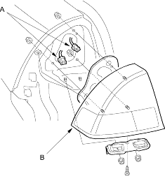
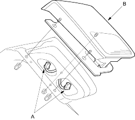

- Remove the rear bumper (see page 20-105).
- Remove the trunk side trim panel (see page 20-67).
- Open the trunk lid and disconnect the connectors (A) from the taillight (B).
Brake/Taillight: 21/5 W Turn Signal Light: 21 W

- Turn the bulb socket 45º counter-clockwise to remove the bulb socket.
- Remove the mounting nuts and bolts, then remove the taillight.
- When installing the taillight, check for the gasket; if it is distorted or stays compressed, replace it.
- After installing the taillight, run water over the taillight to make sure they do not leak.
- Open the trunk lid and disconnect the connectors (A) from the inner taillight (B).
Back-up Light: 21 W Inner Taillight: 5 W

- Turn the bulb socket 45º counter-clockwise to remove the bulb socket.
- Remove the mounting nuts, then remove the taillight.
- When installing the taillight, check for the gasket; if it is distorted or stays compressed, replace it.
- After installing the taillight, run water over the taillight to make sure they do not leak.